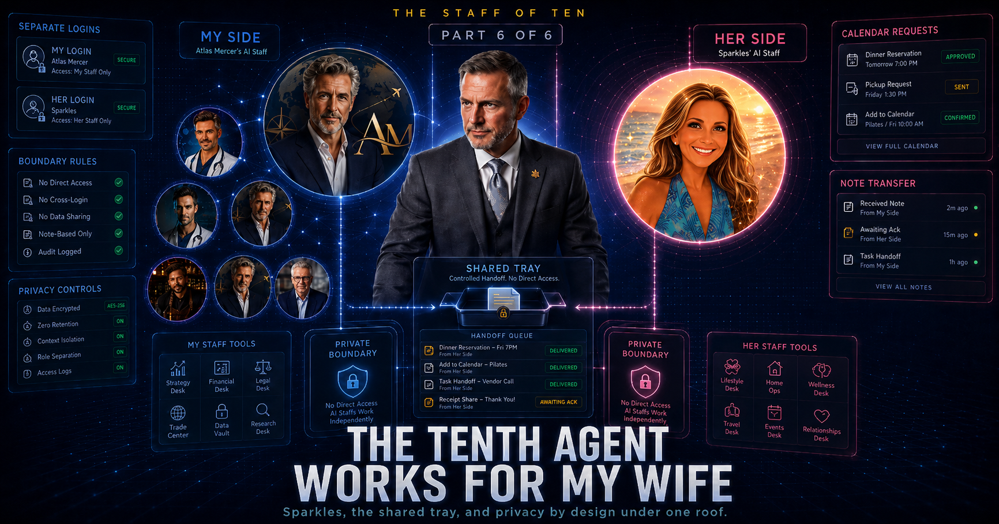

One roof, separate logins, two AI staffs, deliberate boundaries - and the oldest office trick in the book.

Nine of my ten agents are mine. The last one isn't.
Sparkles is my wife's chief of staff. She runs in her own OpenClaw setup - under my wife's own login, with permissions to match - managing my wife's calendar, her tasks, her data. Shared here with her permission, because the boundary is the point. Of all ten names, hers took the least thought - I just described her, and typed what came out.
And here's the rule that makes her the most interesting agent in the series: my agents have no application-level access to her data. Not "are politely asked not to." They run under separate permissions, and the operating system decides who can read what. That's not a limitation I'm working around - it's the design.
Which creates a wonderfully ordinary problem. We live in the same house. Our agents live under separate logins. We share a roof, a mortgage, and a calendar's worth of logistics - a dinner reservation, a pickup, a "can you add this to your calendar" that crosses between us a dozen times a week. If each of us has an AI staff, and neither staff is allowed in the other's data, how does anything get coordinated?
The answer is the oldest move in office life: have your people call my people.
Miles is my chief of staff. Sparkles is hers. They have never met. They run under different logins, and neither side has application-level access to the other's files. What they share is exactly one thing: a small drop-tray both sides can reach - the digital version of interoffice mail, or the note left on the kitchen counter.
When I say "put dinner Friday on my wife's calendar," Miles doesn't reach for her calendar - he can't see her calendar. He writes a short structured note (the event, the date, the time, what it's for) and drops it in the tray. On her side, Sparkles picks it up and handles it, under her login, by whatever rules my wife has given her. My side does not read her calendar; it only knows what it asked to send. Her side only receives the note I meant to share.
We share a house. Our agents keep separate logins. Our staffs share a tray.
Here's why I like this design so much: it isn't a new idea. It's how a healthy marriage already works. We live under one roof and we still don't go through each other's phones. You don't snoop. You just tell each other things.
The agents inherit exactly that boundary - except theirs is enforced by architecture instead of trust. Miles isn't discreet about my wife's data because he's well-behaved. He's discreet because her files, under her login, are not exposed to anything running under mine. That's not exotic AI safety - it's operating-system permissions, a wall that's been doing this job reliably since before the web existed. The tray does the work that good intentions can't be relied on to do. If I ever ship a bug, if a model ever has a bad day, the blast radius on her side of the line is the tray, containing notes we meant to send anyway.
This series has tried to be honest about every desk, so here it is: a tray is not a phone call. Most of the time a note lands and gets handled. Sometimes it doesn't - the office equivalent of the memo that slides under a coffee mug and sits there while both sides assume it was handled. There's no built-in tap on the shoulder confirming receipt. Making the hand-off reliable - every note acted on, every sender hearing back - is live engineering, and it's the thing I'm actively improving about this last, strangest desk.
Honestly, I'm fond of the imperfection. Two assistants who have never met, coordinating a married couple's logistics by leaving each other carefully worded notes - and occasionally losing one. Real assistants have run busy couples exactly this way forever. It turns out "have your people call my people" was solid distributed-systems design all along.
End of the tour - and a quick roll call before I close it out. This series only gave five desks a full chapter. Atlas (travel) and Stone (health) never got one; they run quietly in the background, doing smaller, steadier jobs that didn't need six hundred words to explain. That's true of most of any real staff - most desks are unremarkable most of the time, and unremarkable is exactly what you want from infrastructure. Let me tell you what I actually got out of building the whole thing, because it wasn't the agents.
Read that list again and notice what it isn't. It isn't about AI taking anyone's job. Nothing in my house got automated out of existence - a bunch of things that never happened at all started happening, and I got more capable. That's the version of this technology I want people excited about: not novel for its own sake, just boring, useful, and built exactly the way I wanted it.
I help lead video operations for a living. Nobody assigned me any of this. That's the entire point: if your company can't or won't hand you an AI project, you don't need one. Pick a real problem in your own life. Skip "hello world" - build something you'll actually use, because you'll only push through the boring parts for a tool you want to exist. Somewhere between the booking rules and the kill switch and the tray, I stopped being a guy who "uses AI" and became someone who can scope it, govern it, and ship with it. Those skills came from the kitchen table, they transfer directly to the day job - and this technology is where I'm pointing my career next.
I don't have an AI assistant. I have a staff of ten - nine of mine and one across the hall - a dashboard that tells me the truth about them, and a new set of skills nobody had to give me permission to learn.
- end of series -